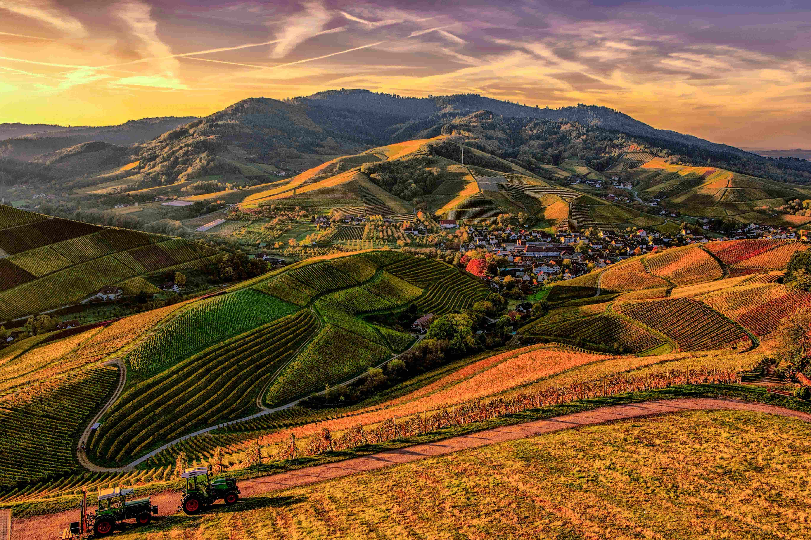
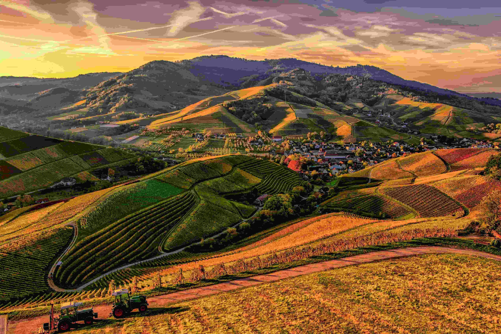

Quin format és el més òptim per aquest tipus d’imatge i per què?
El format més optim per aquesta imatge és el JPEG, ja que comprimeix molt be els detalls i els colors, com per exemple les montanyes del fons o la gespa, perd molt poca qualitat, en el cas del PNG el problema que tenim és quue la imatge pesa massa per el que necessitem.
Amb quin nivell de compressió no es perd qualitat visible?
En el cas de aquesta imatge al tenir tanta resolució i tants detalls no es perd qualitat visible fins la compressió alta.
Podem reduir la mida encara més sense perdre qualitat?
En JPEG, es pot reduir la mida aumentant la compressió, però això afecta la qualitat. Per mantenir una bona qualitat i reduir la mida, és millor optimitzar la imatge per a la web amb eines que equilibren compressió i qualitat, utilitzant una compressió balançejada.
Què passaria si desem la imatge diverses vegades en format JPEG?
Cada vegada que guardem una imatge en format JPEG, es perd una mica de qualitat perquè es comprimeix. Si la guardem moltes vegades, la imatge es deteriora i poden aparèixer defectes com distorsions